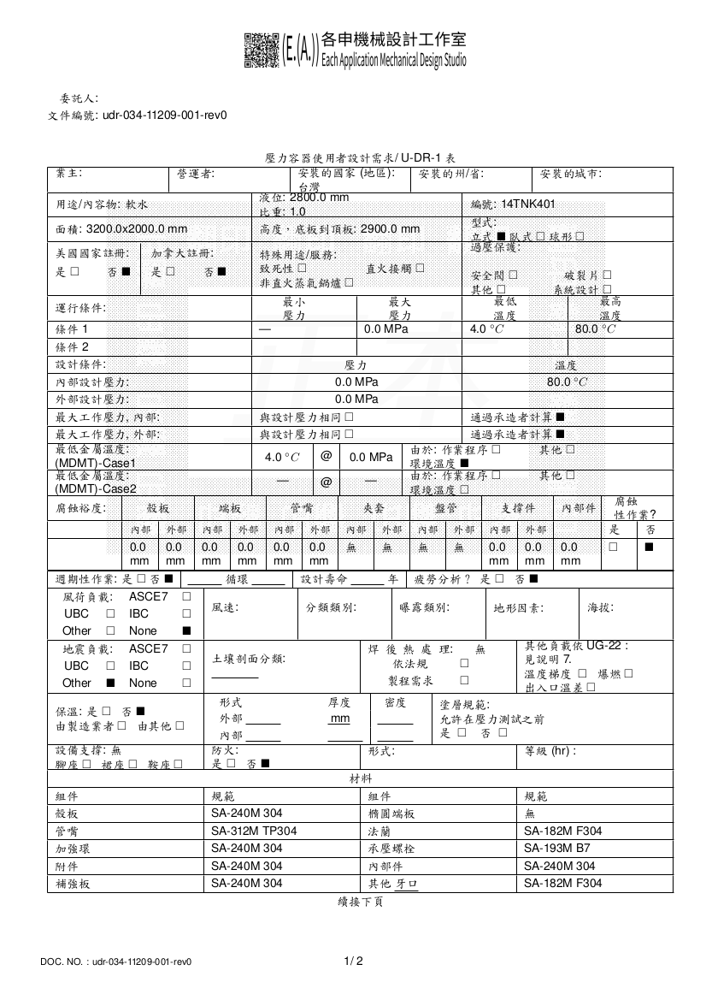
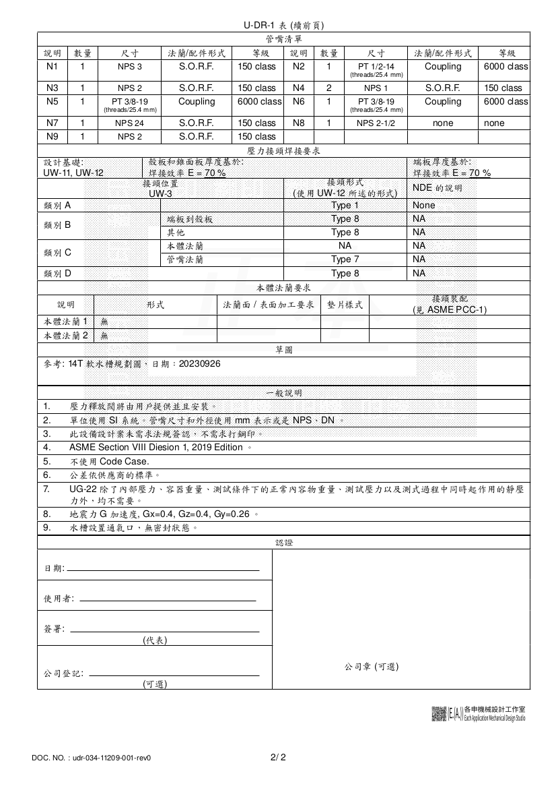

連接各項資料
1. 說明
壓力容器設計是完整的機械設計實作成果之一；完成一份壓力容器設計需要：
- 了解使用者的需求。
- 設計桶槽圖面及說明文件。
- 配合需求並遵循設計法規制作強度計算書。
- 了解壓力容器設計使用的材質。
- 確認壓力容器如何驗收。
以上內容分散在各種文件之中。我們如果要整理文件在一起，通常是使用單一文件並且如書籍目錄需要整理完整；或者在電腦、網路上使用網頁並連接各種文件。首先使用單一文件整合起來，在終極結果就是一份設計文件報告，有封面、綱要及目錄等等…… 其實就是排版作業，看大家想用 MS Office 或是 Libreoffice 去準備文件；選擇其他排版作業統整文件。第二方式使用 HTML 連接各種設計文件，雖然這個比較專業但是比較方便，因為好用的超連接的模式，需要看什麼資料只要點入就會顯示相關資料。雖然如 Libreoffice 所制作的文件也可以轉換成 html ，但是實際上它還是一個二進位制的檔案格式，必須由可以讀取它和執行內容的應用程式才可以使用，其應用層面就降低了很多。再來壓力容器的設計文件在核可前會進版本次很多遍，如果可以搭配版本控制軟體如 git ，可以控制設計文件的制作進度，並適時的改版分支作業。
以壓力容器設計文件，用一個文件管理各項文件方式如下。使用 emacs 的 org mode 。製作一個 package.org 。串連一個《使用者設計需求》、設計圖、內壓計算書和重量計算書。
2. package.org
* 使用者設計需求/ UDR #+ATTR_HTML: :width 900px [[img/udr-034-11209-001-rev0-1.png]] #+ATTR_HTML: :width 900px [[img/udr-034-11209-001-rev0-2.png]] ** 設計圖 [[youtube: 非圓形截面桶槽 方形水槽][https://youtu.be/pyYjD396wxI]] * 內壓計算 ** 端板 ** 殼板 * 重量計算
2.1. 相關連接的資料
使用者設計需求/ UDR


- 設計圖